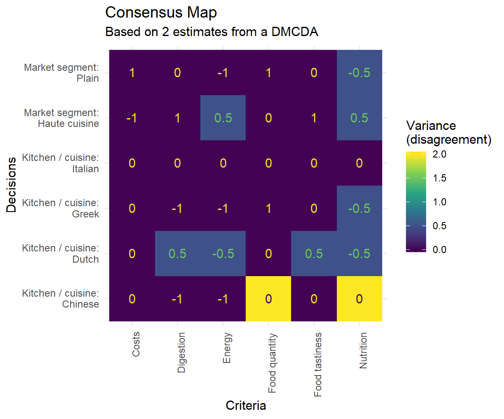

Minimal Dynamic Multi-Criteria Decision Aid example
Gjalt-Jorn Peters
2019-06-25
minimal-dmcda-example.RmdDefined criteria
Criteria are the criteria that are important for making the decisions. These will often be outcomes resulting from the choices made in each scenario. The criteria are what drive the decisions. They are normally not directly under control, but are assumed to result from the decisions.
dmcda::summary_criteria(criteria);
#> levelName
#> 1 criteria
#> 2 ¦--food
#> 3 ¦ ¦--food_tastiness
#> 4 ¦ °--food_quantity
#> 5 ¦--health
#> 6 ¦ ¦--nutrition
#> 7 ¦ ¦--energy
#> 8 ¦ °--digestion
#> 9 °--costs
Details of criteria
| id | parentCriterion | label | description | isLeaf |
|---|---|---|---|---|
| criteria | - | Criteria | - | FALSE |
| food | criteria | Food | - | FALSE |
| food_tastiness | food | Food tastiness | How nice the food tastes (higher scores indicate better taste) | TRUE |
| food_quantity | food | Food quantity | How large the servings are (higher scores indicate larges portions) | TRUE |
| health | criteria | Health | - | FALSE |
| nutrition | health | Nutrition | How nutritious the meal is (higher scores indicate more nutrition) | TRUE |
| energy | health | Energy | How much energy the food provides (higher scores indicate less energy) | TRUE |
| digestion | health | Digestion | How easy the food is to digest | TRUE |
| costs | criteria | Costs | Price of the good (higher scores indicate cheaper food) | TRUE |
Defined decisions
The decisions are the choices that have to be made. Each decision consists of two or more mutually exclusive and exhaustive alternatives.
Summary of decisions
| id | label | description | choices |
|---|---|---|---|
| kitchen | Kitchen / cuisine | In the Netherlands, a number of prototypical restaurant types exist, each with specific characteristics. | ‘Chinese’, ‘Italian’, ‘Greek’ & ‘Dutch’ |
| segment | Market segment | Some restaurants offer plain meals, whereas others offer haute cuisine. | ‘Plain’ & ‘Haute cuisine’ |
Details of decisions
Kitchen / cuisine
In the Netherlands, a number of prototypical restaurant types exist, each with specific characteristics.
Chinese (alternative ‘
1’): Chinese food, usually Chinese-Indonesian and heavily shifted towards wide accessibility.Italian (alternative ‘
2’): Italian food, usually pizza in cheaper places, whereas more expensive restaurants tend to offer mostly pasta-based dishes.Greek (alternative ‘
3’): Greek food, often with a lot of meat.Dutch (alternative ‘
4’): A popular cheaper typically Dutch dinner option consists of fries with a kroket from a snackbar, whereas more expensive options almost always boil down to fusion with French and Italian cuisine.
Market segment
Some restaurants offer plain meals, whereas others offer haute cuisine.
Plain (alternative ‘
1’): These are restaurants that offer plain meals that are relatively similar over restaurants.Haute cuisine (alternative ‘
2’): These are restaurants offering more sophisticated, creative meals.
Empty performance table
performance_table <-
dmcda::create_performance_table(criteria,
decisions_and_alternatives);
temporaryFile <-
tempfile(fileext=".xlsx");
dmcda::write_performance_table(performance_table,
temporaryFile,
overwrite=TRUE);
### Suppress warnings because performance tables don't have
### headers given their ~~messy~~ highly original structure
suppressWarnings(knitr::kable(performance_table));| NA | NA | NA | NA | food_tastiness | food_quantity | nutrition | energy | digestion | costs |
| NA | NA | NA | NA | Food tastiness | Food quantity | Nutrition | Energy | Digestion | Costs |
| kitchen | 1 | Kitchen / cuisine | Chinese | NA | NA | NA | NA | NA | NA |
| kitchen | 2 | Kitchen / cuisine | Italian | NA | NA | NA | NA | NA | NA |
| kitchen | 3 | Kitchen / cuisine | Greek | NA | NA | NA | NA | NA | NA |
| kitchen | 4 | Kitchen / cuisine | Dutch | NA | NA | NA | NA | NA | NA |
| segment | 1 | Market segment | Plain | NA | NA | NA | NA | NA | NA |
| segment | 2 | Market segment | Haute cuisine | NA | NA | NA | NA | NA | NA |
This is the table with all values to be estimated. The values can be filled either through filling the table and importing it, or through specifying specific values, which enables also providing justifications and linking to assertions and sources for support.
Scoring system
In this example, the performance of each decision alternative on each criterion is scored using -1 (‘bad’ or ‘least desirable’), 0 (‘fair’ or ‘moderately desirable’) and 1 (‘good’ or ‘most desirable’). Other scoring systems are also possible of course, for example using five points (-2, -1, 0, 1, 2), or only positive numbers (0, 1, 2, or omitting 0 and instead using 1 and 2, or 1-10, etc). In deciding on the scoring system, take into account how much nuance you can reasonably distinguish and justify, and take into account whether you want a scoring system that maps onto familiar scales, or whether you want to avoid that. For example, in the Netherlands, school grades use a 10-point scale from 1-10, which means that if people score on that scale, they will consider everything below a 6 a ‘failing grade’ and a 6 and higher a ‘passing grade’, and they will very rarely use 9 and 10, which effectively imposes a somewhat odd distance between the points. That is problematic if you start summing and averaging, so that should be avoided. Of course, which scoring systems work well and which works less well depends on the experiences and histories of those doing the scoring.
Consensus between raters
completed_performance_tables <-
dmcda::load_performance_tables(currentDir);
completed_performance_tables$consensusMap;
Estimates
Estimates are the estimates of the effects that every alternative will have on each of the specified criteria. Ideally, every estimate has a justification, which is based on assertions (statements of facts or assumptions) that can be traced back to sources (e.g. scientific articles, policy documents, expert consensus, etc). For example,
estimates <-
dmcda::load_estimates(currentDir,
decisions_and_alternatives = decisions_and_alternatives,
criteria = criteria);Summary of estimates
| Costs | Digestion | Energy | Food quantity | Food tastiness | Nutrition | |
|---|---|---|---|---|---|---|
| Kitchen / cuisine | 4 | 4 | 4 | 4 | 4 | 4 |
| Market segment | 2 | 2 | 2 | 2 | 2 | 2 |
Details of estimates
| decision_id | decision_label | decision_alternative_value | alternative_label | criterion_id | criterion_label | value | label | description | id |
|---|---|---|---|---|---|---|---|---|---|
| kitchen | Kitchen / cuisine | 1 | Chinese | costs | Costs | 0.0 | id_1 | ||
| kitchen | Kitchen / cuisine | 1 | Chinese | digestion | Digestion | -1.0 | id_2 | ||
| kitchen | Kitchen / cuisine | 1 | Chinese | energy | Energy | -1.0 | id_3 | ||
| kitchen | Kitchen / cuisine | 1 | Chinese | food_quantity | Food quantity | 0.0 | id_4 | ||
| kitchen | Kitchen / cuisine | 1 | Chinese | food_tastiness | Food tastiness | 0.0 | id_5 | ||
| kitchen | Kitchen / cuisine | 1 | Chinese | nutrition | Nutrition | 0.0 | id_6 | ||
| kitchen | Kitchen / cuisine | 2 | Italian | costs | Costs | 0.0 | id_7 | ||
| kitchen | Kitchen / cuisine | 2 | Italian | digestion | Digestion | 0.0 | id_8 | ||
| kitchen | Kitchen / cuisine | 2 | Italian | energy | Energy | 0.0 | id_9 | ||
| kitchen | Kitchen / cuisine | 2 | Italian | food_quantity | Food quantity | 0.0 | id_10 | ||
| kitchen | Kitchen / cuisine | 2 | Italian | food_tastiness | Food tastiness | 0.0 | id_11 | ||
| kitchen | Kitchen / cuisine | 2 | Italian | nutrition | Nutrition | 0.0 | id_12 | ||
| kitchen | Kitchen / cuisine | 3 | Greek | costs | Costs | 0.0 | id_13 | ||
| kitchen | Kitchen / cuisine | 3 | Greek | digestion | Digestion | -1.0 | id_14 | ||
| kitchen | Kitchen / cuisine | 3 | Greek | energy | Energy | -1.0 | id_15 | ||
| kitchen | Kitchen / cuisine | 3 | Greek | food_quantity | Food quantity | 1.0 | id_16 | ||
| kitchen | Kitchen / cuisine | 3 | Greek | food_tastiness | Food tastiness | 0.0 | id_17 | ||
| kitchen | Kitchen / cuisine | 3 | Greek | nutrition | Nutrition | -0.5 | id_18 | ||
| kitchen | Kitchen / cuisine | 4 | Dutch | costs | Costs | 0.0 | id_19 | ||
| kitchen | Kitchen / cuisine | 4 | Dutch | digestion | Digestion | 0.5 | id_20 | ||
| kitchen | Kitchen / cuisine | 4 | Dutch | energy | Energy | -0.5 | id_21 | ||
| kitchen | Kitchen / cuisine | 4 | Dutch | food_quantity | Food quantity | 0.0 | id_22 | ||
| kitchen | Kitchen / cuisine | 4 | Dutch | food_tastiness | Food tastiness | 0.5 | id_23 | ||
| kitchen | Kitchen / cuisine | 4 | Dutch | nutrition | Nutrition | -0.5 | id_24 | ||
| segment | Market segment | 1 | Plain | costs | Costs | 0.0 | id_25 | ||
| segment | Market segment | 1 | Plain | digestion | Digestion | 0.0 | id_26 | ||
| segment | Market segment | 1 | Plain | energy | Energy | -1.0 | id_27 | ||
| segment | Market segment | 1 | Plain | food_quantity | Food quantity | 1.0 | id_28 | ||
| segment | Market segment | 1 | Plain | food_tastiness | Food tastiness | 0.0 | id_29 | ||
| segment | Market segment | 1 | Plain | nutrition | Nutrition | -0.5 | id_30 | ||
| segment | Market segment | 2 | Haute cuisine | costs | Costs | -1.0 | id_31 | ||
| segment | Market segment | 2 | Haute cuisine | digestion | Digestion | 1.0 | id_32 | ||
| segment | Market segment | 2 | Haute cuisine | energy | Energy | 0.5 | id_33 | ||
| segment | Market segment | 2 | Haute cuisine | food_quantity | Food quantity | 0.0 | id_34 | ||
| segment | Market segment | 2 | Haute cuisine | food_tastiness | Food tastiness | 1.0 | id_35 | ||
| segment | Market segment | 2 | Haute cuisine | nutrition | Nutrition | 0.5 | id_36 |
Scenarios
Scenarios are sets of coherent alternative selections for every decision.
scenarios_and_alternatives <-
dmcda::load_scenarios(currentDir,
decisions_and_alternatives = decisions_and_alternatives);Summary of scenarios
| scenario_id | label | description |
|---|---|---|
| preference_evi | Evi’s preference | This scenario represents Evi’s preference. |
| preference_gj | Gjalt-Jorn’s preference | This scenario represents Gjalt-Jorn’s preference. |
Details of scenarios
| scenario | decision | alternative | scenario_id | decision_id | decision_alternative_value |
|---|---|---|---|---|---|
| Evi’s preference | Kitchen / cuisine | Dutch | preference_evi | kitchen | 4 |
| Evi’s preference | Market segment | Plain | preference_evi | segment | 1 |
| Gjalt-Jorn’s preference | Kitchen / cuisine | Greek | preference_gj | kitchen | 3 |
| Gjalt-Jorn’s preference | Market segment | Plain | preference_gj | segment | 1 |
Weights of the criteria
Details of weights
| weight_profile_id | criterion_id | criterion_label | weight |
|---|---|---|---|
| maximize_health | food | Food | 1.0 |
| maximize_health | food_tastiness | Food tastiness | 1.0 |
| maximize_health | food_quantity | Food quantity | 0.5 |
| maximize_health | health | Health | 2.0 |
| maximize_health | nutrition | Nutrition | 1.0 |
| maximize_health | energy | Energy | 1.0 |
| maximize_health | costs | Costs | 0.5 |
| minimize_costs | food | Food | 0.5 |
| minimize_costs | food_tastiness | Food tastiness | 1.0 |
| minimize_costs | food_quantity | Food quantity | 1.0 |
| minimize_costs | health | Health | 0.5 |
| minimize_costs | nutrition | Nutrition | 1.0 |
| minimize_costs | energy | Energy | 1.0 |
| minimize_costs | costs | Costs | 2.0 |
| unit_weights | food | Food | 1.0 |
| unit_weights | food_tastiness | Food tastiness | 1.0 |
| unit_weights | food_quantity | Food quantity | 1.0 |
| unit_weights | health | Health | 1.0 |
| unit_weights | nutrition | Nutrition | 1.0 |
| unit_weights | energy | Energy | 1.0 |
| unit_weights | costs | Costs | 1.0 |
| maximize_health | criteria | Criteria | 1.0 |
| maximize_health | digestion | Digestion | 1.0 |
| minimize_costs | criteria | Criteria | 1.0 |
| minimize_costs | digestion | Digestion | 1.0 |
| unit_weights | criteria | Criteria | 1.0 |
| unit_weights | digestion | Digestion | 1.0 |
Details of multiplied weights
| criterion_id | multipliedWeight | profile_id |
|---|---|---|
| food | 1 | maximize_health |
| food_tastiness | 1 | maximize_health |
| food_quantity | 1 | maximize_health |
| health | 1 | maximize_health |
| nutrition | 1 | maximize_health |
| energy | 1 | maximize_health |
| costs | 1 | maximize_health |
| criteria | 1 | maximize_health |
| digestion | 1 | maximize_health |
| food | 1 | minimize_costs |
| food_tastiness | 1 | minimize_costs |
| food_quantity | 1 | minimize_costs |
| health | 1 | minimize_costs |
| nutrition | 1 | minimize_costs |
| energy | 1 | minimize_costs |
| costs | 1 | minimize_costs |
| criteria | 1 | minimize_costs |
| digestion | 1 | minimize_costs |
| food | 1 | unit_weights |
| food_tastiness | 1 | unit_weights |
| food_quantity | 1 | unit_weights |
| health | 1 | unit_weights |
| nutrition | 1 | unit_weights |
| energy | 1 | unit_weights |
| costs | 1 | unit_weights |
| criteria | 1 | unit_weights |
| digestion | 1 | unit_weights |
General overview
estimates <-
dmcda::autofill_estimates(estimates=estimates,
criteria=criteria,
decisions_and_alternatives=decisions_and_alternatives);Summary
In this dynamic multi criteria decision aid, 6 criteria have been specified, as well as 2 decisions that together encompass a total of 6 alternatives. This means that 36 estimates are required. Of these, 36 have been specified.
Details of estimates after autofilling
| decision_id | decision_label | decision_alternative_value | alternative_label | criterion_id | criterion_label | value | label | description | id |
|---|---|---|---|---|---|---|---|---|---|
| kitchen | Kitchen / cuisine | 1 | Chinese | costs | Costs | 0.0 | id_1 | ||
| kitchen | Kitchen / cuisine | 1 | Chinese | digestion | Digestion | -1.0 | id_2 | ||
| kitchen | Kitchen / cuisine | 1 | Chinese | energy | Energy | -1.0 | id_3 | ||
| kitchen | Kitchen / cuisine | 1 | Chinese | food_quantity | Food quantity | 0.0 | id_4 | ||
| kitchen | Kitchen / cuisine | 1 | Chinese | food_tastiness | Food tastiness | 0.0 | id_5 | ||
| kitchen | Kitchen / cuisine | 1 | Chinese | nutrition | Nutrition | 0.0 | id_6 | ||
| kitchen | Kitchen / cuisine | 2 | Italian | costs | Costs | 0.0 | id_7 | ||
| kitchen | Kitchen / cuisine | 2 | Italian | digestion | Digestion | 0.0 | id_8 | ||
| kitchen | Kitchen / cuisine | 2 | Italian | energy | Energy | 0.0 | id_9 | ||
| kitchen | Kitchen / cuisine | 2 | Italian | food_quantity | Food quantity | 0.0 | id_10 | ||
| kitchen | Kitchen / cuisine | 2 | Italian | food_tastiness | Food tastiness | 0.0 | id_11 | ||
| kitchen | Kitchen / cuisine | 2 | Italian | nutrition | Nutrition | 0.0 | id_12 | ||
| kitchen | Kitchen / cuisine | 3 | Greek | costs | Costs | 0.0 | id_13 | ||
| kitchen | Kitchen / cuisine | 3 | Greek | digestion | Digestion | -1.0 | id_14 | ||
| kitchen | Kitchen / cuisine | 3 | Greek | energy | Energy | -1.0 | id_15 | ||
| kitchen | Kitchen / cuisine | 3 | Greek | food_quantity | Food quantity | 1.0 | id_16 | ||
| kitchen | Kitchen / cuisine | 3 | Greek | food_tastiness | Food tastiness | 0.0 | id_17 | ||
| kitchen | Kitchen / cuisine | 3 | Greek | nutrition | Nutrition | -0.5 | id_18 | ||
| kitchen | Kitchen / cuisine | 4 | Dutch | costs | Costs | 0.0 | id_19 | ||
| kitchen | Kitchen / cuisine | 4 | Dutch | digestion | Digestion | 0.5 | id_20 | ||
| kitchen | Kitchen / cuisine | 4 | Dutch | energy | Energy | -0.5 | id_21 | ||
| kitchen | Kitchen / cuisine | 4 | Dutch | food_quantity | Food quantity | 0.0 | id_22 | ||
| kitchen | Kitchen / cuisine | 4 | Dutch | food_tastiness | Food tastiness | 0.5 | id_23 | ||
| kitchen | Kitchen / cuisine | 4 | Dutch | nutrition | Nutrition | -0.5 | id_24 | ||
| segment | Market segment | 1 | Plain | costs | Costs | 0.0 | id_25 | ||
| segment | Market segment | 1 | Plain | digestion | Digestion | 0.0 | id_26 | ||
| segment | Market segment | 1 | Plain | energy | Energy | -1.0 | id_27 | ||
| segment | Market segment | 1 | Plain | food_quantity | Food quantity | 1.0 | id_28 | ||
| segment | Market segment | 1 | Plain | food_tastiness | Food tastiness | 0.0 | id_29 | ||
| segment | Market segment | 1 | Plain | nutrition | Nutrition | -0.5 | id_30 | ||
| segment | Market segment | 2 | Haute cuisine | costs | Costs | -1.0 | id_31 | ||
| segment | Market segment | 2 | Haute cuisine | digestion | Digestion | 1.0 | id_32 | ||
| segment | Market segment | 2 | Haute cuisine | energy | Energy | 0.5 | id_33 | ||
| segment | Market segment | 2 | Haute cuisine | food_quantity | Food quantity | 0.0 | id_34 | ||
| segment | Market segment | 2 | Haute cuisine | food_tastiness | Food tastiness | 1.0 | id_35 | ||
| segment | Market segment | 2 | Haute cuisine | nutrition | Nutrition | 0.5 | id_36 |
Scores for each scenario and weight profile
estimates <-
dmcda::weigh_estimates(estimates=estimates,
weights=weights);
scenario_scores <-
dmcda::scenario_scores(criteria = criteria,
decisions_and_alternatives = decisions_and_alternatives,
estimates = estimates,
scenarios_and_alternatives = scenarios_and_alternatives,
weights = weights);Summary of scores
| scenario | weightProfile | score |
|---|---|---|
| preference_evi | maximize_health | -0.5 |
| preference_evi | minimize_costs | -0.5 |
| preference_evi | unit_weights | -0.5 |
| preference_gj | maximize_health | -2.0 |
| preference_gj | minimize_costs | -2.0 |
| preference_gj | unit_weights | -2.0 |
Scenario: preference_evi
Weighing profile: maximize_health
| decision_id | decision_alternative_value | criterion_id | score |
|---|---|---|---|
| kitchen | 4 | food_tastiness | 0.5 |
| kitchen | 4 | food_quantity | 0.0 |
| kitchen | 4 | nutrition | -0.5 |
| kitchen | 4 | energy | -0.5 |
| kitchen | 4 | digestion | 0.5 |
| kitchen | 4 | costs | 0.0 |
| segment | 1 | food_tastiness | 0.0 |
| segment | 1 | food_quantity | 1.0 |
| segment | 1 | nutrition | -0.5 |
| segment | 1 | energy | -1.0 |
| segment | 1 | digestion | 0.0 |
| segment | 1 | costs | 0.0 |
Scenario: preference_evi
Weighing profile: minimize_costs
| decision_id | decision_alternative_value | criterion_id | score |
|---|---|---|---|
| kitchen | 4 | food_tastiness | 0.5 |
| kitchen | 4 | food_quantity | 0.0 |
| kitchen | 4 | nutrition | -0.5 |
| kitchen | 4 | energy | -0.5 |
| kitchen | 4 | digestion | 0.5 |
| kitchen | 4 | costs | 0.0 |
| segment | 1 | food_tastiness | 0.0 |
| segment | 1 | food_quantity | 1.0 |
| segment | 1 | nutrition | -0.5 |
| segment | 1 | energy | -1.0 |
| segment | 1 | digestion | 0.0 |
| segment | 1 | costs | 0.0 |
Scenario: preference_evi
Weighing profile: unit_weights
| decision_id | decision_alternative_value | criterion_id | score |
|---|---|---|---|
| kitchen | 4 | food_tastiness | 0.5 |
| kitchen | 4 | food_quantity | 0.0 |
| kitchen | 4 | nutrition | -0.5 |
| kitchen | 4 | energy | -0.5 |
| kitchen | 4 | digestion | 0.5 |
| kitchen | 4 | costs | 0.0 |
| segment | 1 | food_tastiness | 0.0 |
| segment | 1 | food_quantity | 1.0 |
| segment | 1 | nutrition | -0.5 |
| segment | 1 | energy | -1.0 |
| segment | 1 | digestion | 0.0 |
| segment | 1 | costs | 0.0 |
Scenario: preference_gj
Weighing profile: maximize_health
| decision_id | decision_alternative_value | criterion_id | score |
|---|---|---|---|
| kitchen | 3 | food_tastiness | 0.0 |
| kitchen | 3 | food_quantity | 1.0 |
| kitchen | 3 | nutrition | -0.5 |
| kitchen | 3 | energy | -1.0 |
| kitchen | 3 | digestion | -1.0 |
| kitchen | 3 | costs | 0.0 |
| segment | 1 | food_tastiness | 0.0 |
| segment | 1 | food_quantity | 1.0 |
| segment | 1 | nutrition | -0.5 |
| segment | 1 | energy | -1.0 |
| segment | 1 | digestion | 0.0 |
| segment | 1 | costs | 0.0 |
Scenario: preference_gj
Weighing profile: minimize_costs
| decision_id | decision_alternative_value | criterion_id | score |
|---|---|---|---|
| kitchen | 3 | food_tastiness | 0.0 |
| kitchen | 3 | food_quantity | 1.0 |
| kitchen | 3 | nutrition | -0.5 |
| kitchen | 3 | energy | -1.0 |
| kitchen | 3 | digestion | -1.0 |
| kitchen | 3 | costs | 0.0 |
| segment | 1 | food_tastiness | 0.0 |
| segment | 1 | food_quantity | 1.0 |
| segment | 1 | nutrition | -0.5 |
| segment | 1 | energy | -1.0 |
| segment | 1 | digestion | 0.0 |
| segment | 1 | costs | 0.0 |
Scenario: preference_gj
Weighing profile: unit_weights
| decision_id | decision_alternative_value | criterion_id | score |
|---|---|---|---|
| kitchen | 3 | food_tastiness | 0.0 |
| kitchen | 3 | food_quantity | 1.0 |
| kitchen | 3 | nutrition | -0.5 |
| kitchen | 3 | energy | -1.0 |
| kitchen | 3 | digestion | -1.0 |
| kitchen | 3 | costs | 0.0 |
| segment | 1 | food_tastiness | 0.0 |
| segment | 1 | food_quantity | 1.0 |
| segment | 1 | nutrition | -0.5 |
| segment | 1 | energy | -1.0 |
| segment | 1 | digestion | 0.0 |
| segment | 1 | costs | 0.0 |
Appendices
Assertions
This is an overview of all assertions (all ‘facts’. ‘claims’, ‘assumptions’, or ‘propositions’ that are based on some form of evidence) that this DMCDA is based on. Assertions can have a certain evidence quality, which can be specified and scored.
Counterfactuals
When formulating assertions, it is also good practice to formulate counterfactuals. This are references to other assertions that also have sources. This enables for example scoring for the number of counterfactuals.